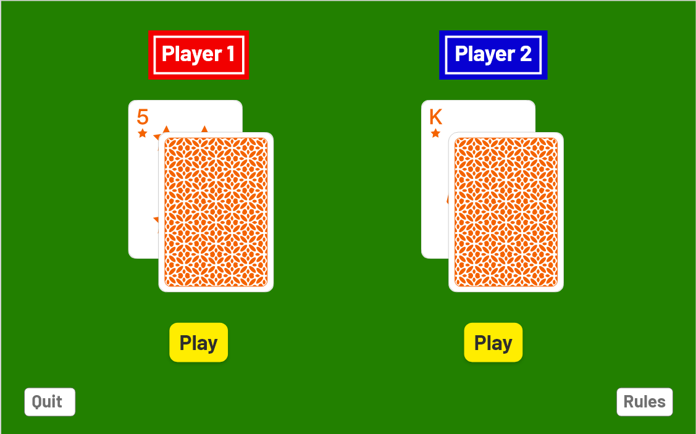
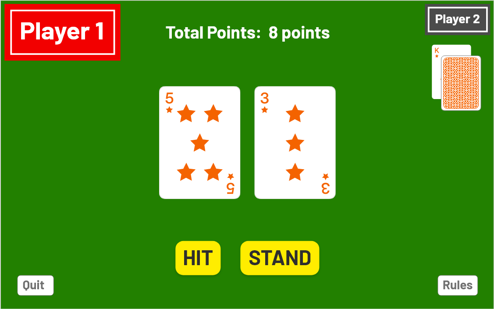
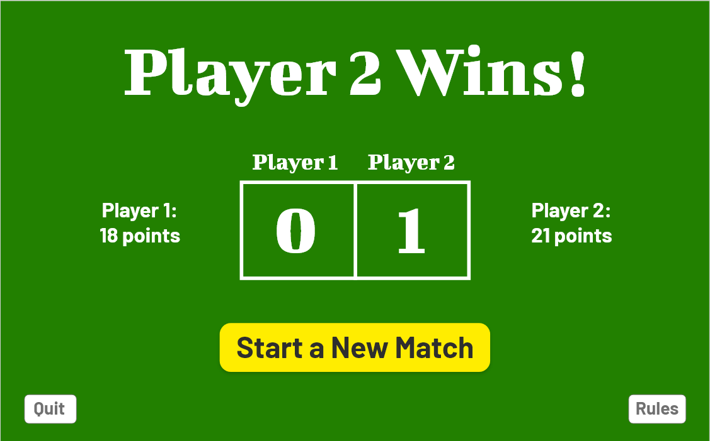

For my final project, I decided to do a prototype of my game, which, to my benefit, also includes a design comp of its different sections. The prototype I created just links all my comps together to test how intuitive my redesigns are. It includes new buttons and the changing of some text's placement to test what would be better for the user. I made a lot of copy pages so users can play all of the buttons at least once.
For the design comps, I essentially made 3 “new” designs for my blackjack game. The first redesign is in the “waiting room” section. In my original design, this section was just a timed part where it displayed “Now Playing: Player 1” to give time for the players to prepare and switch turns. Based on the comments I got from user testers, this section is no longer timed, but a screen that shows both player's face up cards and two buttons that say “play”. In this design, the timed feature is taken out, and replaced with buttons so to let the users themselves choose who plays first and at their own pace.
The next redesign is the actual game section. This one is pretty similar to my original comp that I have for my first creation, but it adds two new elements: first, it labels which player is currently playing, and second, it shows the other player's face up and face down cards. On top of that, I moved the scoring label above the cards instead of below, which is to later test and see which one users prefer.
My last redesign is the final win section. This section in my original was just a message from the computer stating who won and the final score of both players with a “start a new game” button replacing the quit button. This new design includes all of the original content, but also includes a scoreboard for how many matches were won by each player. This also changes the button from “start a new game” to “start a new match” and keeps the “quit” button where it's been for most of the game.